Six Builds, One Tool Changer: Teaching a Micro820 to Take the Short Way Round
I spent a semester turning an eight-station CNC tool magazine into a working machine, one download at a time. It started as a single latching rung on an Allen-Bradley Micro820 and finished as a sixteen-rung program where an operator types a tool list on a four-bit thumbwheel, and the wheel takes the shorter way round to every tool, waits at the transfer point, counts what it has moved, and finishes its lap before it stops. Ladder handles the interlocking, and six IEC 61131-3 Structured Text function blocks handle the arithmetic. The part I did not expect to matter most: I reviewed the program by reading what the ladder compiler emitted rather than the ladder I had drawn, and that is where three defects were hiding.
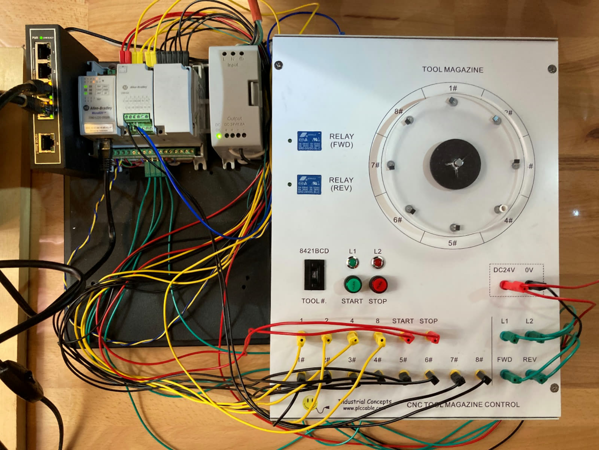
There is no G-code here, just a carousel that has to pick a direction.
The trainer is an eight-station rotating tool wheel. A magnet on the platter passes over eight discrete position sensors, so the controller never sees an encoder count, only a one-hot code spread across eight wires. A four-bit BCD thumbwheel lets an operator name a station by number, and two digital outputs drive the wheel forward and reverse. That is the entire interface I had to work with.
Which makes this sequential control, not geometry. There is no toolpath to interpolate. The question the program answers over and over is easy to say and awkward to implement: given where the wheel is parked and which tool is wanted next, which way do I spin so the trip is shortest? Then notice the arrival, carry the tool back to the transfer station, and do it again for every entry in a list the operator typed in while the machine was running.
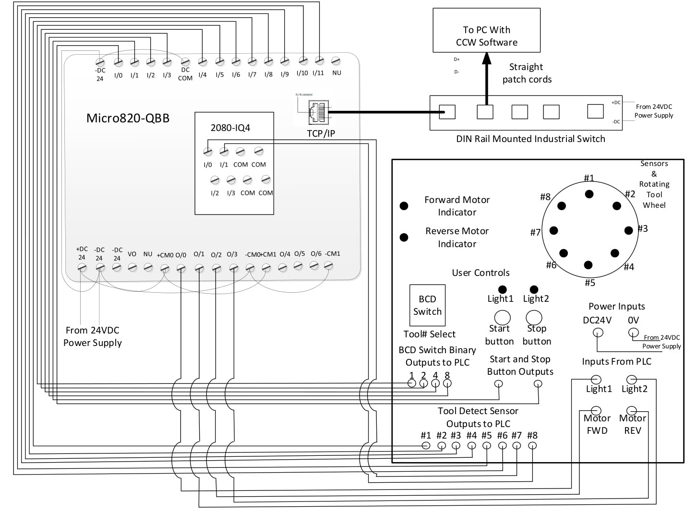
| Designator | Alias | Dir | Function |
|---|---|---|---|
| _IO_EM_DI_00 | Stop | IN | Stop push button |
| _IO_EM_DI_01 | Start | IN | Start push button |
| _IO_EM_DI_02 to 05 | BCD1, 2, 4, 8 | IN | Thumbwheel bits, binary weights |
| _IO_EM_DI_06 to 11 | Position1 to 6 | IN | Wheel position sensors 1 to 6 |
| _IO_P1_DI_00 to 01 | Position7, 8 | IN | Sensors 7 and 8, via the 2080-IQ4 plug-in |
| _IO_EM_DO_00 to 01 | Light1, Light2 | OUT | Indicator lamps |
| _IO_EM_DO_02 to 03 | FWD_Motor, REV_Motor | OUT | Forward / reverse motor relays |
Controller: Allen-Bradley Micro820 2080-LC20-20QBB. Twelve DI, seven DO, four AI, programmed over Ethernet from Connected Components Workbench.
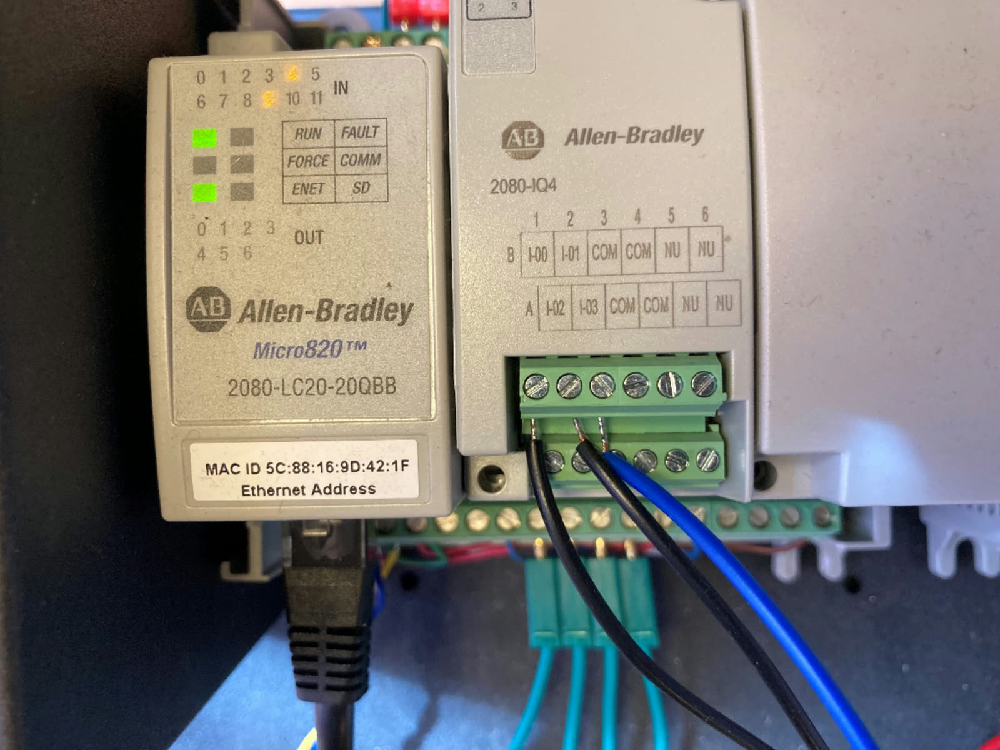
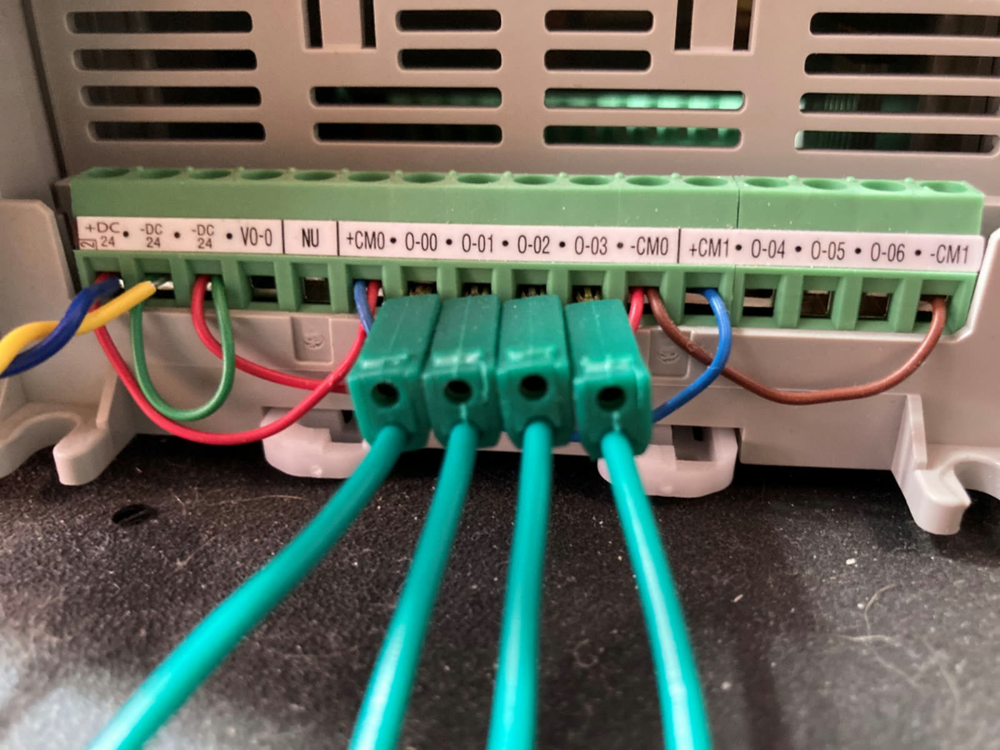
One rule for splitting the languages.
CCW gives you Ladder Diagram, Structured Text and Function Block Diagram, and I partitioned the whole application on one rule: ladder for interlocking and sequencing, Structured Text for arithmetic and decisions. Ladder is the right notation for seal-in latches, motor interlocks and one-shot pulse routing, and it is what a maintenance technician expects to find at 3 a.m. Expressing a modulo, a weighted binary decode or a nested conditional in ladder gives you a diagram three screens wide that nobody can read. Those went into ST.
What came out of that rule is six user-defined function blocks called from a main ladder program that never grew past sixteen rungs. Fourteen physical input points get consumed by two of the blocks and leave as two integers, in a single rung.
| Block | Takes | Returns | Responsibility |
|---|---|---|---|
| FB_Position_to_dec | 8 sensor bits | PositionValue_out (UINT) | One-hot sensor bus into a station number, 1 to 8 |
| FB_BCD_to_Dec | 4 thumbwheel bits | PositionSelect_out, BCD_load_out | Debounce, decode BCD, flag switch position 0 |
| FB_DeterminRotation | base, target, detected | DirectionState (1 fwd / 2 rev) | Shortest-arc decision, latched between base crossings |
| FB_detectTool | as above + RotationState | DirectionState (BOOL) | Flip direction at the pickup, and again at the base |
| FB_LoadArray | load pulse, held value | PositionSequence[1..10], PositionMax | Edge-triggered store of a station into the sequence |
| FB_SequenceArray | sequence, max, detected | SequenceIndex, PickUp_EN, Place_EN | Advance the index modulo the count; emit event pulses |
Two hazards I had to design around
A PLC re-runs its program every scan, so any input that stays true for more than one scan, which is every mechanical input there is, retriggers its action again and again. I converted every event in this application into a single-scan pulse with the delayed-copy idiom. The thumbwheel had its own version of the problem: it is a rotary make-before-break switch that emits transient garbage codes while it turns, so FB_BCD_to_Dec runs a self-resetting 100 ms TON and refuses to assert a decoded value until it has seen two consecutive equal samples.
BCD0_delayed := BCD0_Load_in; // one scan of Inc_EN per rising edge, no matter how long the switch sits there
First give it memory. Then give it motion.
Stage 1 is one rung: a normally-closed Stop in series with the parallel pair of Start and the output's own feedback contact. That feedback branch is the memory, and reading the compiled Structured Text is what made that obvious to me, the second disjunct being the seal that holds the output true until the series path opens.
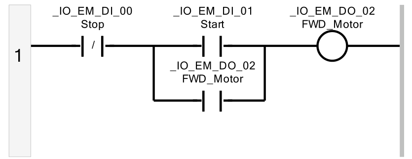
Stage 2 replaces the operator's fingers with sensors: a second seal-in built from Position1 and Position2 instead of the buttons, the whole rung gated by RunState. The detail I care about is the third rung. Reverse is derived from the inverse of forward rather than from an independent condition, so the two contactors can never be commanded together. That is a program-level interlock sitting on top of the electrical one in the panel.
FWD_Motor := ((RunState AND Position1) OR (RunState AND FWD_Motor)) AND NOT Position2;
REV_Motor := RunState AND NOT FWD_Motor; // mutual exclusion by construction
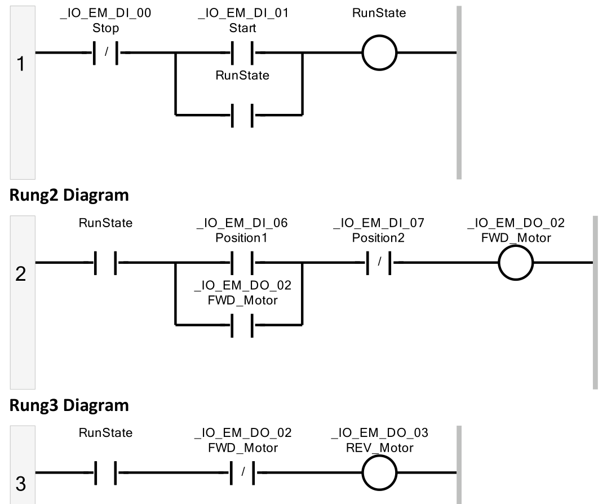
Fourteen wires in, two integers out.
Stage 3 is where the program stopped being wiring and started being software. FB_Position_to_dec sums the eight one-hot sensor bits against their station weights, FB_BCD_to_Dec debounces and decodes the thumbwheel, and both run in a single rung. An = compare between the two results produces ToolDetected, which takes over the stopping role from the hard-wired second sensor, so the pickup station became selectable at run time, without recompiling.
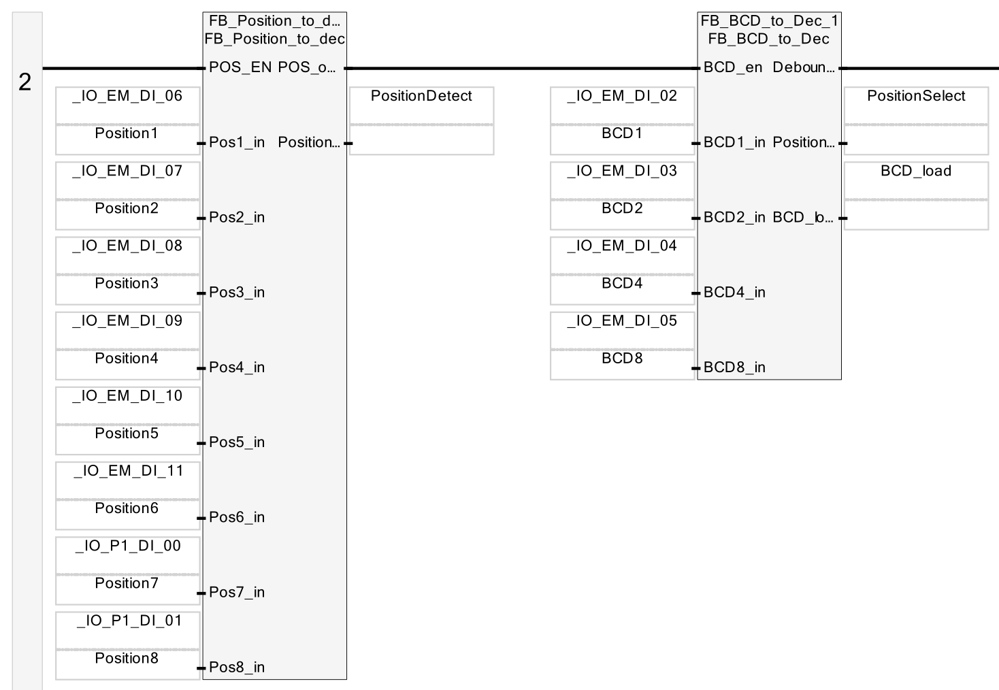
PositionSelect land on a value, and power flow through the compare into the motor rungs. Green is energised, exactly as the controller sees it.The antipode trick: split the wheel, then just compare.
With a target selectable at run time, the wheel had to decide which way to spin. Both arcs between base B and target T sum to eight stations, so the decision collapses to one question: is the target in the forward half? I answer it by computing the station opposite the base and using it as a boundary:
TempDint := MOD(TempDint + 4, 8) + 1; // the +1 returns it to 1-based station numbering
PositionOpposite := ANY_TO_UINT(TempDINT);
When PositionOpposite > PositionSelect_in, the forward half is an ordinary open interval and the test is a direct comparison. When the wheel wraps past station 8 the numbers stop being monotonic, so the code flips strategy and excludes the reverse arc instead of testing the forward one. Two branches, no trigonometry, no lookup table.
The decision is guarded as well. FB_DeterminRotation only evaluates while the wheel is sitting over the base and holds its previous value the rest of the time, because the wheel is in continuous motion and the inputs to the decision only mean anything at the reference point. FB_detectTool then does the reversal, flipping direction on arrival at the target so the tool is carried back, and flipping again at the base for the next outbound leg. Together they behave as two interacting two-state machines.
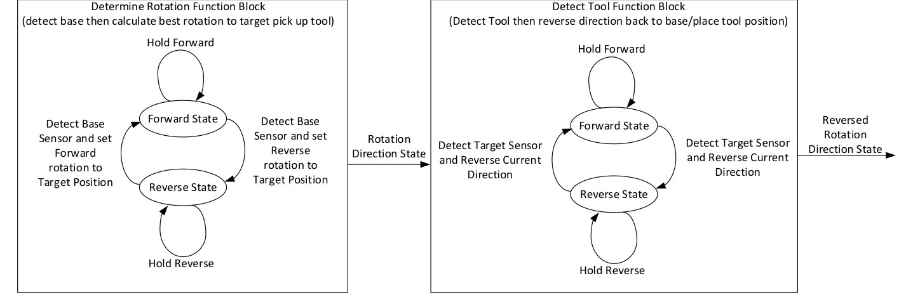
Try it: the decision, exhaustively
Pick a base and a target. The wheel shades the two arcs the antipode carves out, the Structured Text highlights the branch that actually executes, and the matrix underneath runs the same function over all 56 ordered pairs at once.
Two things fell out of that exhaustive sweep. First, across all 56 ordered (base, target) pairs the block never picks the longer arc, not once. Second, there is exactly one equidistant target per base, the true antipode B+4, where both arcs are four stations long, and the code resolves every one of those ties forward. So a demo that looks like it is taking the long way at that one station is behaving as specified, because there is no shorter way to take. The block's own header comment flags this as a consequence of the wheel's even order: with an odd number of stations every target would have a strictly shorter arc and the test would be exact.
It is worth being clear about what PositionOpposite actually is. For base 1 it evaluates to 6 rather than the true antipode 5, so it is B+5, one station past. That is not a slip. It is being used as the first station of the reverse arc, an exclusive upper bound, and it is precisely that off-by-one that makes the strict < comparison land the tie on the forward side and every other target on the correct side.
With direction computed upstream, the motor rungs collapsed. The branched structure of Stage 3 disappeared entirely and what was left is a complementary pair of two-contact rungs, which is the clearest single illustration I have of what moving logic into function blocks buys you.
REV_Motor := RunState AND NOT DirectionState;
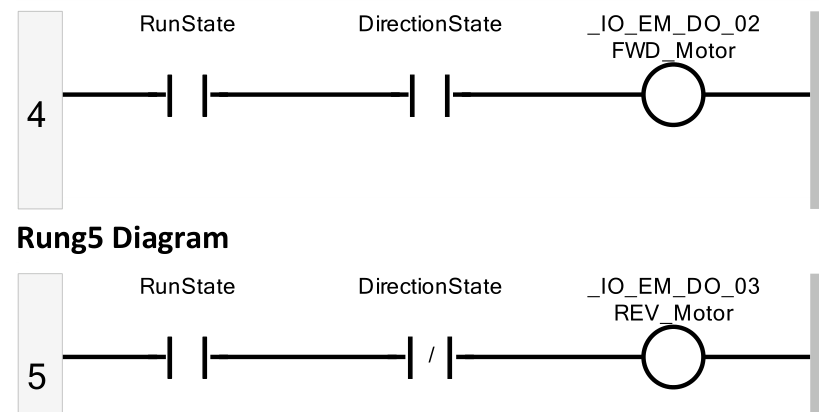
Typing a tool list on a switch with four bits and no keypad.
A tool changer that services one station is a demo. To make it a process it needs a list, so Stage 5 introduced PositionSequence[1..10], a program-scoped array whose dimension bounds the sequence length. Overrunning it faults the controller outright, which turns index containment into a safety requirement rather than good manners.
The hard part was not the array. It was data entry. The trainer has two push buttons and one four-bit thumbwheel, no keypad and no display, so the operator interface had to become a gesture. A maximum-seen latch captures the highest value dialled since the last store, and dialling down through zero is the store command. Switch position 0 is not a valid station, so I appropriated it as a command key, and position 9 became the sequence reset. A four-bit switch ends up serving as both a data field and a keyboard. That is representative rather than contrived: minimising I/O point count is routine commercial pressure, and it routinely pushes complexity out of the panel and into the program.
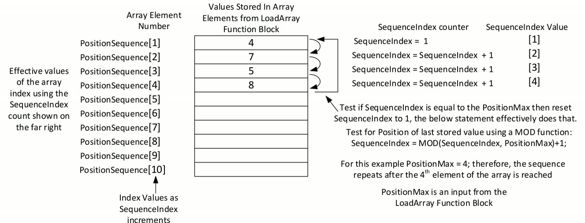
SequenceIndex is a DINT purely because the MOD operator demands one. Image: lab documentation v1.1.
One subtlety hides in that listing. Reset sets PositionMax to 1 and every store increments it, so after n entries the register reads n+1, one more than the number of tools stored. The sequencer compensates on the other side by wrapping the index the moment it reaches the maximum rather than passing it:
FB_SequenceArray also carries a DetectedFlag, which guarantees exactly one advance per arrival no matter how many scans the sensor stays true, and it exports PickUp_EN and Place_EN as one-scan event pulses. The sequencer has no use for those pulses itself. They exist because Stage 6 needs exactly those two events, and generating them here saved me duplicating arrival detection later.
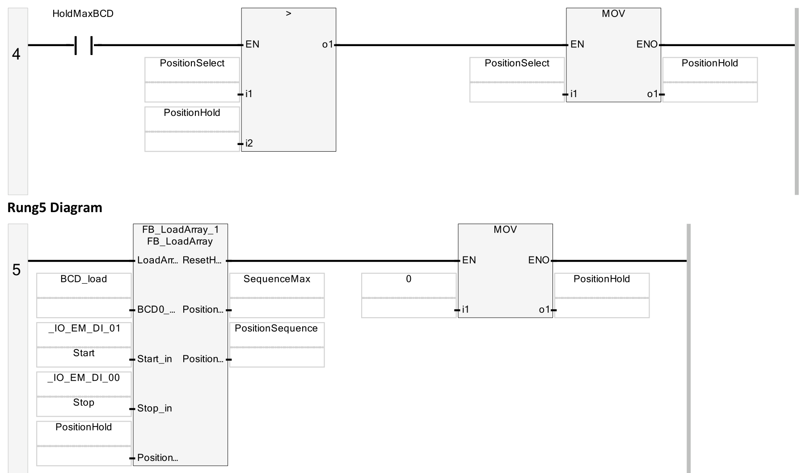
Dwell at the transfer point. Count the parts. Finish the lap.
The last stage adds three independent capabilities across rungs 9 to 16, and each one answers the same question: what does a real process need that a demo does not?
A transfer delay, because a real gripper needs dwell time. PlaceDetectPulse sets a latch that enables a 500 ms TON, and the timer's own Q resets that latch. The intermediate signal Partwait_Timing, true only while the timer is running, goes onto both motor rungs as a normally-closed contact and holds the wheel still for the duration.
A parts counter, a CTU clocked by PickDetectPulse. I tied its reset to the constant FALSE on purpose, so the total survives stop and restart. It is an inventory figure, not a control variable.
A cycle stop, which is the one I enjoyed building. A conventional stop halts the wheel wherever it happens to be and can strand a tool mid-transfer. The cycle-stop circuit inverts the seal-in of rung 1: it latches on Stop, unlatches on Start, and sits in parallel with RunState on every rung that RunState gates. The process then keeps running after the stop request until two conditions coincide, at least one place event having occurred and SequenceIndex having wrapped back to 1. Then the latch breaks and the wheel halts at the base with the sequence complete. The counter guard is there for Stop pressed immediately after Start, which would otherwise satisfy the index condition trivially and terminate before any work was done.
All eight of those rungs are in the controller now. I transcribed rungs 9 to 16 into the CCW project, built it clean, downloaded it to the Micro820 and ran it on the trainer, taking the program from the eight rungs Stage 5 ended on to sixteen. Nine local variables came with them: Wait_EN, Partwait_Timing, PartsCount, CycleStop, CycleStop_EN, CycleStopCount, and the TON_1, CTU_1 and CTU_2 instances. On the bench the wheel held station for the full 500 ms dwell, the parts total carried across a stop and restart instead of clearing, and a stop request mid-sequence was honoured only once the index had wrapped back to 1. media/Lab6.pdf in the repository is the CCW printout of the program as tested.
Try it: load a sequence and run the magazine
This is the finished machine: the thumbwheel gesture, the array, the shortest-path decision, the dwell timer, both counters and the cycle-stop latch, wired together exactly as the rungs specify. Load a sequence the way an operator would, dialling 9 to reset, then for each tool dialling up to its number and back down through 0. Pick a base and press Start. Single-scan pulses are stretched so you can see them.
Don't review the diagram. Review what the compiler emitted.
CCW's QuickLD compiler writes an intermediate Structured Text file for every ladder program it builds: the ladder flattened into sequential assignments, in scan order. I found it a far more reliable thing to review than the drawing, because branch topology, evaluation order and write ordering are all explicit instead of implied by geometry. I checked every committed project by reading that file against what I had meant the program to do.
It costs nothing, it needs no hardware, and it turned up three things that looking at the rendered ladder did not.
FINDING 01Stage 6 was missing from the controller, and is now built and running.
Reading the compiled text showed the Stage 6 solution to be byte-identical to Stage 5: the part-wait timer, the parts counter and the cycle-stop circuit existed in my design but not in the PLC. Side by side, the two stages' ladder printouts looked like different programs.
Closed, verified on hardware. I wrote the eight missing rungs into the CCW project, taking the program from 8 to 16, then downloaded it and ran it on the trainer. Dwell, parts counter and cycle-stop all behaved as designed.
FINDING 02The rotation block's arguments are shifted by one slot.
At Stage 5 the base was meant to migrate from a compile-time constant to the thumbwheel, so the operator could move the transfer station while the sequence ran. The generated code said otherwise. The literal 7 left over from the Stage 4 pattern was still sitting in the first input box, pushing every other argument down one:
Two consequences. The base is frozen at station 7 instead of tracking the thumbwheel. More seriously, the block's evaluation guard, IF (PositionDetectNumber_in = PositionSelect_in), now compares the current array element against the constant 7 rather than the wheel sensor against the operator's base, so the direction decision re-evaluates on the wrong event entirely. FB_detectTool_1 is bound the same way and inherits the same defect. The fix is a three-field reassignment on one rung.
Corrected in the program, hardware pass outstanding. Both blocks are rebound to (PositionSelect, PositionSequence[SequenceIndex], PositionDetect), so the base follows the thumbwheel and the guard compares the wheel sensor against it. I have not exercised that on the trainer yet.
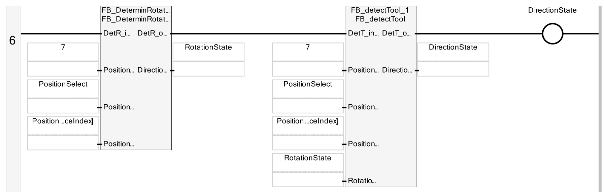
7 on the first input of both blocks. Put it beside the Stage 4 rung and the cause is obvious. The two rungs are structurally identical and only the contents of six input boxes changed between stages. A constant in the first box looked right to me, because it had been right one stage earlier.FINDING 03An output coil overwrites the function block's own result.
On the direction rung, DirectionState is assigned twice: once as the output pin of FB_detectTool, and once as an OTE coil terminating the rung. The compiler emits them in that order:
DetT_out_EN only propagates rung power, so the second write replaces the computed direction with the rung's power state, and it lands last, which means the motor rungs downstream consume the overwritten value for the rest of that scan. The pattern reproduces the reference manual's own figures rather than originating here, and it is present from Stage 4 onward. The remedy is to delete the terminating coil and let the output pin be the sole writer. It still needs confirming on hardware before I would trust the direction logic, because a program whose direction Boolean is pinned true still appears to run. It would just always rotate forward.
Corrected in the program, hardware pass outstanding. The terminating coil is deleted and FB_detectTool_1 is the sole writer of DirectionState. The rotation behaviour that restores is exactly what still owes a run on the trainer.
All three share something worth naming: each is invisible in the graphical ladder and obvious in the generated text. Findings 02 and 03 are aliasing errors, correctly drawn diagrams whose bindings do not mean what they appear to mean. That is a decent argument for treating the compiler's intermediate output as a first-class review artefact in PLC work, the same way a generated assembly listing gets read in safety-critical embedded development.
What I took away from it.
Incremental beats monolithic when every stage is downloadable. Six programs that each run on the trainer is a completely different debugging experience from one program that either works or does not, because every regression has an obvious blast radius. The ladder and ST boundary is a real design decision, and drawing it at interlocking versus arithmetic is what kept a sixteen-rung program legible while it did real algorithmic work. A known limitation is worth characterising rather than apologising for: the antipode test's asymmetry turned out to be exactly one equidistant target per base out of seven, with zero suboptimal choices in the remaining 48 pairs, and that bound is worth more than a vague caveat. And the diagram is not the program. Two of the three defects I found were bindings that rendered perfectly and meant something else, and both became visible the moment I read the compiler's own output instead.
Lab documentation v1.1 by Dr. Sangram Redkar, Ira A. Fulton Schools of Engineering, Arizona State University, distributed with the trainer by plccable.com; the six Structured Text function blocks are transcribed from its Appendix A. Figures credited above are reproduced from that manual. Implementation, simulators, verification and report by Prajjwal Dutta.